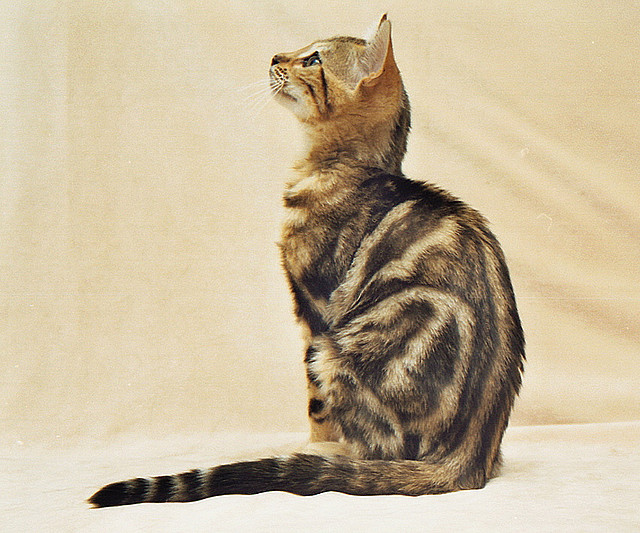

Kot Bengalski
Wygląd
Kot bengalski jest duży, silny i dobrze umięśniony, elegancki w ruchu - nie powinien sprawiać wrażenia ociężałego; waży od 5,5 do 9 kg. Jego głowa jest szeroka, w kształcie trójkąta o zaokrąglonych konturach, raczej mała w porównaniu z resztą ciała, z nieznacznie zaznaczonym przełomem. Tułów powinien być mocny, długi, klatka piersiowa szeroka i dobrze umięśniona.
Charakter i zachowanie
Kot bengalski jest zwierzęciem czułym i przywiązanym do opiekuna. Ma duży temperament, zrównoważony charakter, jest żywiołowy i ciekawski. W odróżnieniu od swojego dzikiego przodka (felis bengalensis, zwanego azjatyckim lampartem) nie wykazuje agresji, jest łagodny i przyjazny. Jest dość nieufny - obcych traktuje z dystansem i potrzebuje czasu, aby ich zaakceptować. Dobrze czuje się wśród innych kotów, nie jest konfliktowy, choć zdarzają się także osobniki o dominującej naturze; bez problemu zaprzyjaźni się również z psem.
Pielęgnacja
Szata prawie nie wymaga zabiegów pielęgnacyjnych. Dzięki odpowiedniej, urozmaiconej diecie i czesaniu raz w tygodniu zawsze wygląda efektownie. Raz na jakiś czas trzeba sprawdzić uszy i w miarę potrzeby przyciąć pazury.